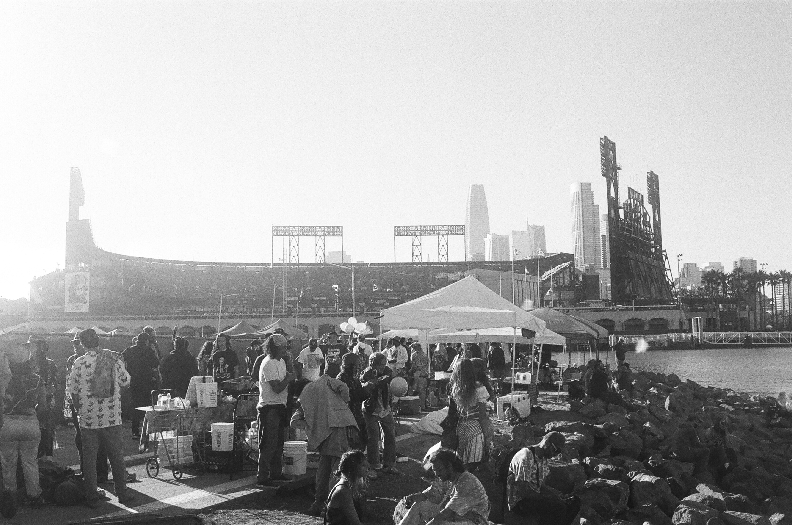
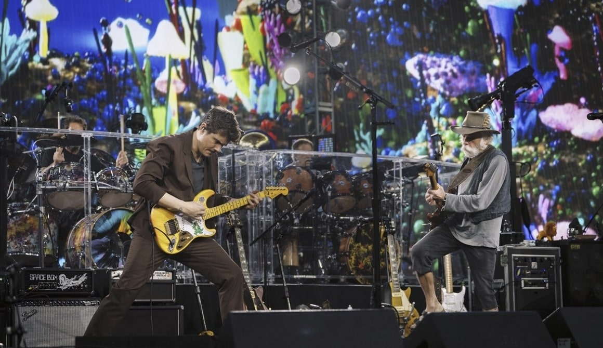
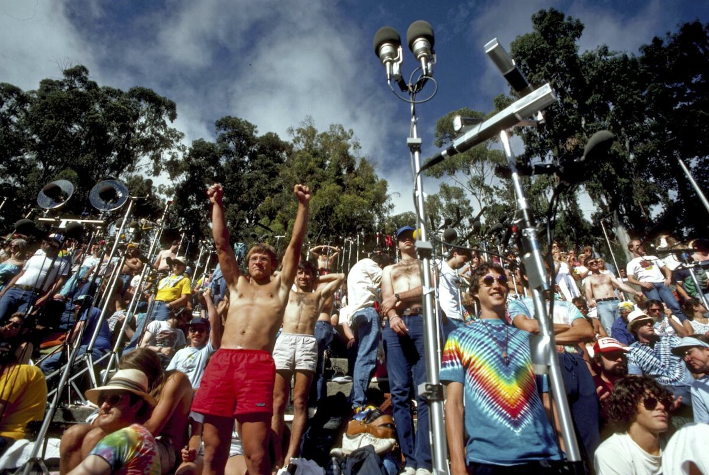
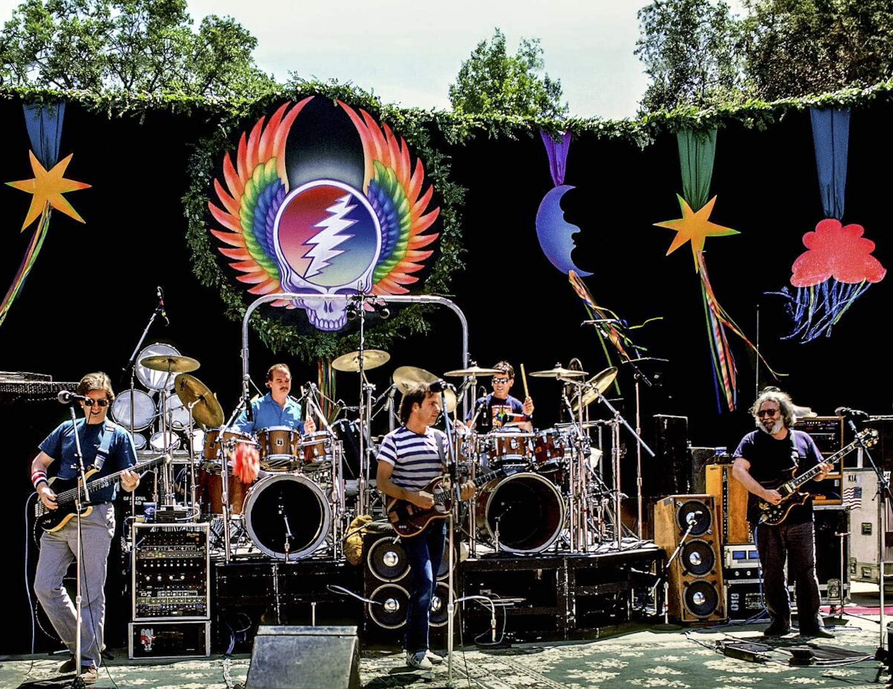
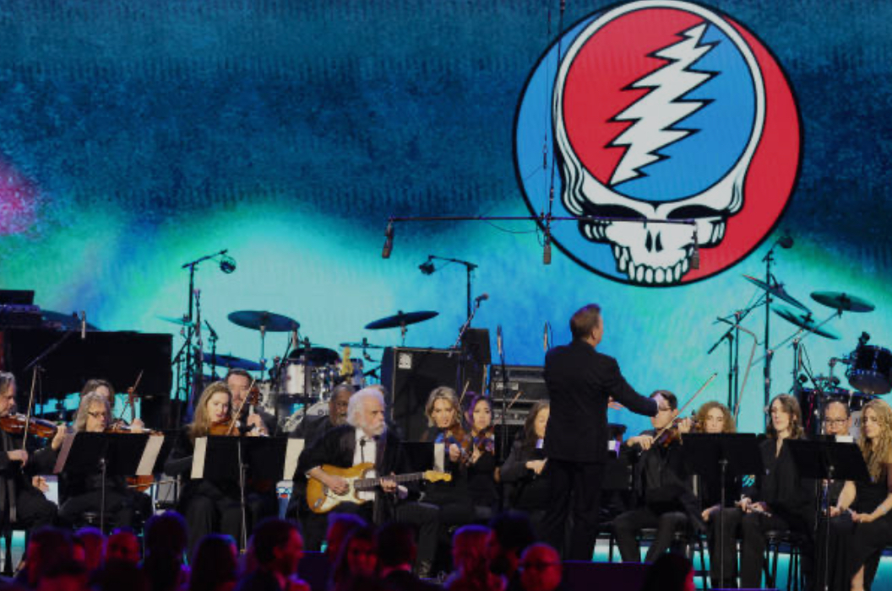
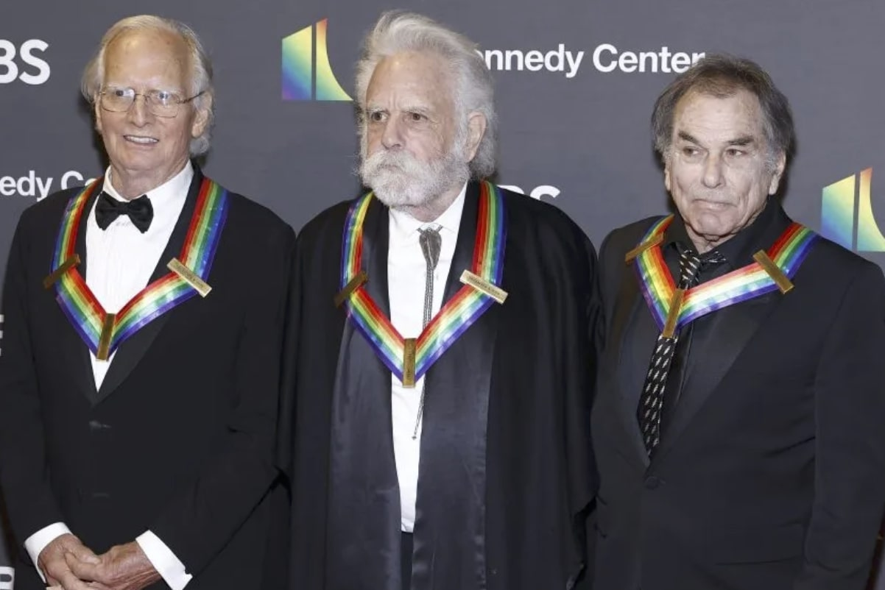

Shakedown transforms a parking lot into a city of its own.
Inside Shakedown Street
On Shakedown Street, every lot becomes a town square. Food vendors, tie-dye stalls, and music echo the generosity and creativity of Dead culture.

Old road, new riders: the songbook stretches with each generation.
From Bob Weir’s rhythms to John Mayer’s solos, the band balances reverence with reinvention, proving the music is alive and adaptable.

Tapers preserve every jam, building the world’s largest music archive.
The tapers’ openness turned concerts into shared memory, archiving thousands of shows for future generations.

Big or small, the gathering is always the same: a family of sound.

Counterculture meets concert hall in symphonic renditions of the classics.

From counterculture icons to cultural institutions.